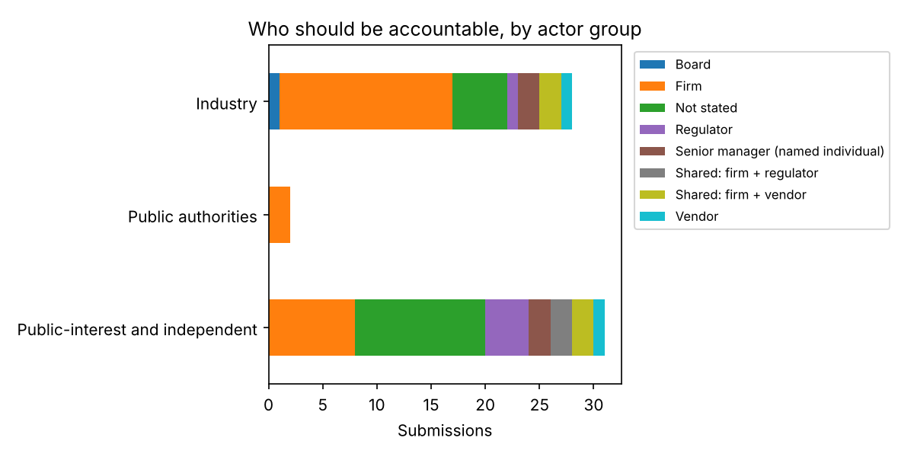
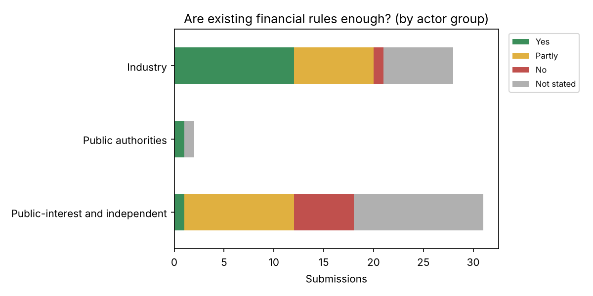
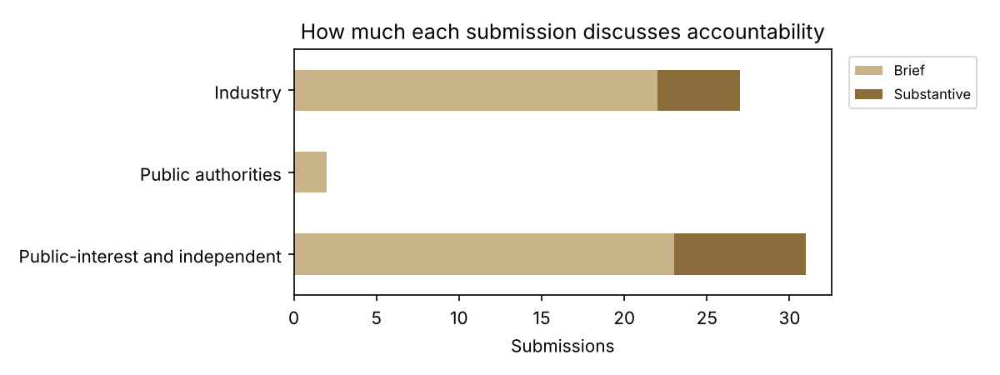

Research question: How do organisations giving evidence to the UK Treasury Committee's 2025–26 inquiry into AI in financial services construct accountability for regulated firms' AI-assisted decisions?
An evidence map of written and oral evidence to the House of Commons Treasury Committee's inquiry into AI in financial services (launched February 2025; report HC 684 published January 2026). Coded by Archit Gupta (University of Bristol) as an independent project alongside his undergraduate dissertation. 82 of the 82 published written submissions coded; the 4 oral evidence sessions are not yet coded. Codes follow codebook.md in this project's GitHub repository.



The Committee held four oral evidence sessions. They are listed here with links to the official transcripts and have not yet been coded.
| Session | Witnesses | Actor group | Questions | Transcript | Status |
|---|---|---|---|---|---|
| 7 May 2025 | UK Finance; Association of British Insurers (ABI); Association for Financial Markets in Europe (AFME) Jana Mackintosh (UK Finance); David Otudeko (ABI); Amandeep Luther (AFME) | Industry | Q1-92 | Transcript | Not yet coded |
| 24 June 2025 | University of Oxford; University of Cambridge; University of Edinburgh Business School Prof Sandra Wachter; Prof Neil Lawrence; Prof Galina Andreeva | Public-interest and independent | Q93-130 | Transcript | Not yet coded |
| 15 October 2025 | Financial Conduct Authority; Bank of England Jessica Rusu and David Geale (FCA); Tom Mutton and Jonathan Hall (Bank of England) | Public authorities | Q131-206 | Transcript | Not yet coded |
| 4 November 2025 | HM Treasury Lucy Rigby KC MP (Economic Secretary to the Treasury); James Fairburn and Catherine McCloskey (HM Treasury) | Public authorities | Q207-280 | Transcript | Not yet coded |
Showing 82 of 82 coded submissions
| Ref | Submitter | Actor group / type | Primary / secondary accountable | Rules enough? | Depth / evidence | Argument, quote and notes |
|---|---|---|---|---|---|---|
| AIFS0031 | Financial Conduct Authority | Public authorities Regulator | Firm then Senior manager (named individual) | Yes | Brief Weak evidence | The FCA has no AI-specific regime; firms' AI use falls under existing frameworks, with SM&CR senior manager accountability listed alongside the Consumer Duty “Accountability and governance, including the Senior Managers and Certification Regime (SM&CR) which emphasises senior management accountability and is relevant to the safe and responsible use of AI.” SM&CR is listed as one relevant framework among several, not named as the main locus of accountability. |
| AIFS0035 | Bank of England | Public authorities Regulator | Firm then Regulator | Not stated | Brief Strong evidence | Firms' own risk management, backed by prudential supervision, is the main control on AI risk “Firm-level risk management and microprudential regulation can help mitigate these risks” Says it is keeping under review whether frameworks need clarifying; takes no firm position on adequacy. |
| AIFS0049 | NatWest Group | Industry Bank | Firm then Government | Not stated | Brief Strong evidence | The firm keeps humans in control of AI that affects customers, within its own ethics framework, and wants government clarity on future regulation “This includes ensuring human oversight in any scenario where AI or any algorithm is used in a way that would affect a customer outcome.” Notes its Board is engaged with AI. Asks government (not regulators) for clarity on proposed regulation; gives no clear view on whether current rules are adequate. |
| AIFS0018 | Revolut | Industry Bank | Not stated | Partly | Brief Strong evidence | Existing rules need modifying across fraud, KYC/AML, trading, consumer protection and model validation, while their core principles remain “Existing regulations and frameworks are likely to require modification or supplementation to address AI-specific risks” No statement on who is accountable for AI outcomes; describes its own human oversight practice and calls for collaboration between firms, tech providers, regulators and consumer advocates. |
| AIFS0023 | Phoenix Group | Industry Insurer | Firm then Vendor | Partly | Brief Strong evidence | The deploying firm is responsible through expert oversight of models, with Consumer Duty as a backstop and suppliers monitored “Ensure that business subject matter experts have oversight of application specific models and their outputs” Also calls for new audit requirements for AI systems. |
| AIFS0006 | Zurich UK | Industry Insurer | Firm then Vendor | Yes | Brief Strong evidence | Underwriters stay accountable for AI-assisted decisions; third-party AI providers need a resilience and transparency framework “We are focused on ensuring that training is delivered regarding human-in-the-loop, and the accountability underwriters have for decision making.” Executive summary: no new regulations are needed. Recommends a framework for third-party providers and AI professional standards. |
| AIFS0074 | UK Finance | Industry Industry body | Firm then Vendor | Yes | Substantive Strong evidence | Firms remain responsible for AI outcomes even where liability for third-party models is unclear; existing rules are adequate “…financial services firms will remain responsible for ultimate outcomes” Quote is the second half of a longer sentence. |
| AIFS0088 | Association of British Insurers (ABI) | Industry Industry body | Shared: firm + vendor then Regulator | Partly | Brief Strong evidence | Lines of accountability across the AI supply chain are unclear, so every part of the chain should be regulated equally “There are risks that the lines of accountability, responsibility and liability are unclear” |
| AIFS0058 | The Investment Association | Industry Industry body | Firm then Vendor | Yes | Brief Strong evidence | Firms manage AI risk through their own governance and contracts that set out third parties' obligations; existing rules plus sector guidance suffice “…enter into legal arrangements to clearly outline obligations and to ensure accountability” Favours leveraging existing rules, topped up with sector-level guidance; does not see current rules as a serious barrier. |
| AIFS0060 | TheCityUK | Industry Industry body | Shared: firm + vendor then Government | Yes | Substantive Strong evidence | Responsibility should be split between AI providers and deploying firms so firms do not carry AI risk alone; government should clarify liabilities “Responsibilities should be appropriately allocated between AI providers and deployers to avoid financial services firms having to manage this individually.” Supports regulating within existing frameworks; asks for guidance on Model Risk Management and Consumer Duty. |
| AIFS0059 | techUK | Tech, AI provider or consultancy (outside core groups) Tech provider | Firm then Regulator | Yes | Brief Weak evidence | Existing rules are a strong foundation for firms' AI governance, but regulators should clarify SM&CR and Consumer Duty expectations “Clarification is needed on expectations under the Senior Managers and Certification Regime…” Tech-sector trade body. Also: 'Current financial services regulation provides a strong foundation for the safe and responsible use of AI.' Primary code rests on its emphasis on firms' governance frameworks. |
| AIFS0048 | Mastercard | Industry Tech provider | Firm | Partly | Brief Strong evidence | Firms should adopt internal AI governance frameworks within existing technology-neutral law, with new policy only where needed “Encouraging firms to adopt AI governance frameworks will ensure that AI systems are developed and implemented transparently” |
| AIFS0071 | Deloitte | Tech, AI provider or consultancy (outside core groups) Professional services | Firm | Not stated | Brief Weak evidence | Firms should build governance and oversight into AI from the outset “Governance – putting in place sufficient oversight to adequately assess and mitigate the spectrum of risks” Mostly practical guidance on AI adoption; expects more regulation in future but takes no view on current rules. |
| AIFS0037 | Burges Salmon LLP | Tech, AI provider or consultancy (outside core groups) Law firm | Shared: firm + vendor then Regulator | Yes | Substantive Strong evidence | Responsibility between firms and their technology providers is not yet clearly allocated, so regulators should clarify how existing principles, including the senior managers regime, apply “…the attribution of responsibility for regulatory risk as between regulated financial institutions and technology providers” Recommends no new rules; favours guidance and codes. |
| AIFS0003 | Dr Daniele D'Alvia and Prof Rosa Lastra | Public-interest and independent Academic | Regulator then Firm | No | Brief Strong evidence | Current rules cover AI only indirectly, so regulators should impose AI-specific duties such as explainability on firms “The opacity of AI decision-making further exacertbates [sic] concerns over accountability” Every recommendation is addressed to regulators, policymakers or government. |
| AIFS0079 | Dr Clara Martins Pereira (Durham Law School) | Public-interest and independent Academic | Regulator then Firm | Partly | Brief Strong evidence | Existing frameworks partly cover AI risks, but regulators must fill gaps for opaque self-learning models, supported by industry codes “…most AI risks are already (at least somewhat) covered by existing frameworks” |
| AIFS0053 | Prof PK Senyo (FinTech & Information Systems, Southampton) | Public-interest and independent Academic | Regulator then Vendor | Partly | Brief Strong evidence | Regulators should expand existing rules to cover AI, oversee AI infrastructure providers as critical participants and mandate explainability “…there should be increased regulatory oversight on providers of AI services” Coded Partly, not No: he asks to expand existing market abuse rules and use existing designation powers rather than for a new AI regime. |
| AIFS0046 | Maximilian Goehmann (PhD candidate, LSE) | Public-interest and independent Academic | Vendor then Regulator | No | Substantive Strong evidence | Accountability for faulty data is diffuse along the supply chain, so each party assumes another checked it; regulators need data-specific oversight “…all can potentially presume the data they receive has been quality-checked by someone else in the chain” Calls current frameworks' neglect of data governance a 'critical gap' and proposes new licensing of data providers. |
| AIFS0043 | Finance Innovation Lab, and Financial Inclusion and Markets Centre | Public-interest and independent Civil society | Senior manager (named individual) then Board | Partly | Substantive Strong evidence | Firms should nominate a named senior person responsible for AI's effect on vulnerable consumers, and the FCA should make boards understand AI outcomes “…nominate a board member or other senior person…” Finance Innovation Lab is a UK charity; FIMC is a unit of the Financial Inclusion Centre. Also: '[The FCA] should ensure that boards and senior management have a better understanding of the outcomes generated by AI and implement robust governance and oversight of AI driven business models.' Asks for a precautionary approach and new FCA guidance and standards. |
| AIFS0015 | Unite the Union | Public-interest and independent Trade union | Firm | Not stated | Brief Strong evidence | Employers cannot use AI to shift responsibility for their decisions; criteria and reasons must stay explainable “Employers must never use AI to avoid responsibilities for their decisions.” Context is mainly employers' decisions about staff (shifts, performance, surveillance), not customer outcomes. Endorses workplace AI legislation (employment law, so not coded under financial rules). |
| AIFS0002 | AI & Partners | Tech, AI provider or consultancy (outside core groups) Professional services | Firm then Regulator | Partly | Brief Strong evidence | Regulators should set clear AI accountability guidelines while firms keep robust risk management, and existing rules may need updating for AI-specific risks “Financial regulators should establish clear guidelines on AI accountability, ensuring that financial institutions maintain robust risk management protocols.” AI-compliance consultancy. Also says existing financial regulations may need updates for AI-specific challenges. |
| AIFS0004 | Bonsai Smart Wealth Ltd | Industry Asset manager | Firm | Partly | Brief Weak evidence | AI can close the advice gap, but slow and vague regulation holds back AI-first firms; the FCA needs faster AI authorisation routes and clearer Consumer Duty guidance “Offer human support as a backstop, particularly for complex or sensitive financial decisions.” Places controls (audit trails, human backstops) on firms; names no individual. Rules code rests on calls for AI-specific authorisation and clearer guidance within the FCA framework. |
| AIFS0005 | Finexos | Tech, AI provider or consultancy (outside core groups) Tech provider | Not stated | Not stated | Brief Weak evidence | AI can make credit fairer and faster, but lack of explainability and risks such as surge pricing could harm vulnerable consumers “Explainability and transparency are the hurdles for adoption.” AI credit-decisioning vendor. Raises explainability as a barrier but takes no position on who is accountable. |
| AIFS0007 | Dr Arben Kita | Public-interest and independent Academic | Not stated | Not stated | Brief Weak evidence | Machine-learning research finding that credit-market risk measures predict risk premia better than equity-based ones “Regulators can use these findings to assess market efficiency and potential regulatory interventions.” Empirical research summary; accountability not discussed. |
| AIFS0009 | Dr Anandadeep Mandal | Public-interest and independent Academic | Regulator then Firm | No | Brief Weak evidence | AI brings productivity gains but also systemic, third-party and consumer risks that call for audits, human oversight and AI-specific governance frameworks “Regulators should require AI content verification tools and human oversight in AI trading.” Primary coded Regulator because almost every recommendation is addressed to regulators (as for AIFS0003). Also proposes mandating AI audits for third-party providers. Rules code rests on: 'Regulators must modernize laws, enforce fairness audits, and develop AI-specific governance frameworks.' |
| AIFS0010 | Ms Ana Isabel Canhoto | Public-interest and independent Academic | Not stated | Not stated | Brief Weak evidence | Machine learning in anti-money-laundering is limited by fragmented data across institutions and poor training data “The interest in leveraging artificial intelligence (AI), particularly machine learning, in the fight against money laundering (AML) and criminal activities is growing.” Research on AI in AML; no position on accountability or on financial regulation. |
| AIFS0011 | Dr Alison Lui; Dr George Lamb; Dr Lola Durodola | Public-interest and independent Academic | Firm then Government | No | Substantive Strong evidence | The UK should create a statutory right to explanation for automated credit decisions so applicants can hold lenders to account “We argue for a statutory right to explanation in automated credit decision-making in the UK, as transparency and accountability are central to the rule of law.” Calls for new AI-specific legislation (a statutory right) on automated credit decisions; also says explainable AI alone is insufficient. |
| AIFS0012 | Anjum Hoda | Tech, AI provider or consultancy (outside core groups) Other | Not stated | Not stated | Brief Weak evidence | An AI-enabled, bank-run payments and rewards network would speed up monetary policy transmission, with banks keeping the lending decision “Unplank itself does not run lending algorithms.” Individual (founder of the venture Unplank). Accountability only implied (the lending decision stays with participating banks), so coded Not stated. |
| AIFS0013 | Dr Tetyana (Tanya) Krupiy | Public-interest and independent Academic | Firm then Government | Not stated | Brief Weak evidence | Equality law should be revised and financial services providers obliged to offer consumers a human decision-maker instead of AI “Oblige the providers of financial services to grant an option to the consumers to have a human decision-maker to decide on their application without the use of artificial intelligence.” Main ask is revising the Equality Act 2010 (other law, so rules coded Not stated). |
| AIFS0014 | Dr Virág Blazsek | Public-interest and independent Academic | Firm then Regulator | Not stated | Substantive Strong evidence | Generative AI should only assist, with a human always making the final decision, so that any error falls on the financial service provider, not the consumer “This approach means that any error would fall within the risk of the financial service provider and not the customer and consumer.” Also proposes a referendum on fundamental AI questions and says regulators must resist sector pressure. No position on adequacy of financial regulation. |
| AIFS0016 | The Society of Pension Professionals (SPP) | Industry Industry body | Not stated | Not stated | Brief Weak evidence | Pensions firms use AI mainly for simple internal tasks under human oversight, and few see regulation as a barrier “Many pensions firms are currently using AI for simple tasks, to improve the speed and efficiency of internal processes, subject to human oversight.” Pensions only. Describes firms' current practice (human oversight) without taking a position on who should be accountable. Survey: 3% cited regulatory restrictions as a barrier; no view on rule adequacy. |
| AIFS0017 | Softcat PLC | Tech, AI provider or consultancy (outside core groups) Tech provider | Not stated | Not stated | Brief Weak evidence | UK AI adoption depends on collaboration between firms, technology providers, regulators and government “It is only through the collaboration of firms, technology providers, regulators and government, that the UK will be able to ensure it is not left behind in the race to innovate and adopt AI technologies.” IT services firm; short submission with no position on accountability. |
| AIFS0019 | Aventur | Industry Asset manager | Regulator | No | Brief Weak evidence | AI can close the advice gap, but outdated frameworks and the lack of AI-specific financial rules hold it back; the FCA should set up an AI oversight unit “The lack of AI-specific financial regulations causes compliance concerns.” Digital wealth platform (grouped like Bonsai). Primary rests on its call for the FCA to launch an AI Financial Services Oversight Unit; says little about firms' own accountability. |
| AIFS0020 | Dr Richard Whittle; Dr Stuart Mills | Public-interest and independent Academic | Firm then Regulator | Yes | Brief Strong evidence | Generative AI can help human auditors detect harmful online choice architecture, supporting firms' Consumer Duty obligations and FCA enforcement “Importantly, the Consumer Duty places the responsibility of consumers protection from their own behavioural biases on Financial Services Firms (Whittle, 2024).” Treats the existing Consumer Duty as the governing framework; AI proposed as a tool for auditors and the regulator. |
| AIFS0021 | AFME (Association of Financial Markets in Europe) | Industry Industry body | Not stated | Yes | Brief Weak evidence | Wholesale firms adopt AI cautiously within existing, technology-agnostic risk frameworks that remain fit for purpose “Further, existing third-party risk management frameworks are largely technology-agnostic, and the processes in place to review and revise these frameworks ensure that they remain fit for purpose and relevant as innovation develops.” Describes how firms manage AI risks (training staff, mitigations) but takes no position on who should be accountable; short submission. |
| AIFS0024 | Amplified Global Ltd | Tech, AI provider or consultancy (outside core groups) Tech provider | Firm then Regulator | Partly | Brief Strong evidence | AI can improve the clarity of financial communications, but human oversight is essential and outcome-based rules should require firms to test and report outcomes “Where applied, outcome-based regulation should be supported by the requirement for firms to undertake extensive testing and monitoring, and to provide regular data-driven reports on a regular basis on the outcomes they and their customers are achieving.” Co-authored with an academic (Prof Richard Hyde). Also: 'The FCA must continue to ensure AI transparency and responsible deployment.' |
| AIFS0025 | International Longevity Centre UK | Public-interest and independent Think tank | Not stated | Partly | Brief Weak evidence | AI can improve financial guidance for an ageing population, but needs updated regulation, AI-specific safeguards and attention in the FCA's advice-guidance review “Clear and updated regulations will be needed to safeguard consumer data and ensure accountability.” Does not say who should be accountable. Suggests AI-specific safeguards may be needed on top of GDPR. |
| AIFS0026 | The Chartered Institute of Payroll Professionals (CIPP) | Tech, AI provider or consultancy (outside core groups) Other | Not stated | Not stated | Brief Weak evidence | Payroll professionals use AI cautiously because of data risks and want government standards and guidance “Members believe the Government should be setting standards on AI and producing practical business owner and employer guidance of what to consider and how to control where data goes.” Payroll professional body, outside financial services. Raises software providers' data security, not accountability for financial decisions. |
| AIFS0027 | Dr Daniel Cash | Public-interest and independent Academic | Shared: firm + regulator | Partly | Brief Strong evidence | Credit rating agencies' AI adoption could remove human oversight in a conflicted, opaque process, so the FCA should examine it and co-develop an early code of conduct “Pursuing an early Code of Conduct that CRAs could develop alongside the FCA, as their primary regulator in the UK.” About credit rating agencies. Warns against 'hands-off' regulation but proposes a code within the FCA regime. |
| AIFS0028 | UK Sustainable Investment and Finance Association (UKSIF) | Industry Industry body | Senior manager (named individual) then Board | Not stated | Brief Strong evidence | Responsible investors expect companies to govern AI risks, including a board member or committee responsible for AI oversight “Some specific recommendations made by investors on companies’ AI risk management processes, policies, and governance include the following which we would recommend all companies consider: a dedicated board member or board-level committee with responsibility for AI oversight and AI policies, annual disclosure of governance policies, and regular employee training to provide upskilling on use of AI systems and corporate policies.” Recommendation applies to investee companies generally, not only financial firms. Notes a 'lack of clear regulatory frameworks' on AI but makes no call on financial regulation. |
| AIFS0030 | Ms. Isabela Parisio et al. | Public-interest and independent Academic | Firm then Regulator | Partly | Brief Weak evidence | Existing technology-neutral rules cover most AI concerns, but firms need more regulatory guidance on governance and accountability of AI decisions, and regulators need more AI capability and transparency “Key areas that may require additional regulatory guidance towards enforcement and interpretation of existing decisions and regulations include governance frameworks, AI expertise, data governance, model risk management, contracting with third parties, and the use of AI in regulatory compliance (regtech).” Submitted by the Techno-Regulatory AI Sandbox (TRAIS) research team. Accountability discussed as a transparency problem; no named locus beyond firms and regulators. |
| AIFS0032 | Hymans Robertson LLP | Tech, AI provider or consultancy (outside core groups) Professional services | Firm | Yes | Brief Strong evidence | Firms should keep a qualified human in the loop and their own AI governance, under existing financial regulation rather than new AI law “Rather than introducing restrictive new legislation that could stifle innovation, the UK should leverage existing financial regulations and align with international standards to balance innovation with consumer protection.” Lists SM&CR among existing standards to leverage, and cites 84% of firms appointing AI oversight individuals, but does not place accountability on a named individual. |
| AIFS0033 | Dr Nader Virk | Public-interest and independent Academic | Not stated | Partly | Brief Weak evidence | AI raises accountability and transparency risks, especially in automated advice, so regulatory frameworks must develop liability and explainability provisions “…regulatory frameworks also have to develop accountability and liability considerations…” Does not say who should be accountable; calls for frameworks to develop rather than for new law. |
| AIFS0034 | Verint Systems Inc. | Tech, AI provider or consultancy (outside core groups) Tech provider | Not stated | Not stated | Brief Weak evidence | AI surveillance of trader communications should always keep a human in the loop, especially for regulatory reports or HR action “From both an ethical and legal standpoint, it will be important to ensure that there is always a human in the loop of decision making, especially where a report is to be made to a regulator, or where HR action might be appropriate.” Vendor of call-recording and analytics. Human oversight only; no locus of accountability or view on rules. |
| AIFS0036 | Lloyd's of London | Industry Insurer | Firm | Yes | Brief Strong evidence | Existing rules (including SMCR and the Critical Third-Party regime) already address the main AI concerns, so regulators should enforce them and guide firms rather than add new regulation “However, the main concerns policymakers have on AI in insurance are already addressed by existing (or upcoming) regulation, such as GDPR, SMCR, Solvency UK, Consumer Duty, or the Critical Third-Party regime.” Lloyd's market. Flags concentration on shared cloud providers and LLMs as a systemic risk, and says future prescriptive PRA/FCA guidance may be needed on models firms cannot see. |
| AIFS0038 | Later Life Ambitions | Public-interest and independent Consumer body | Not stated | Not stated | Brief Weak evidence | Older customers need transparent, accountable AI, clearly defined oversight of systems, and access to human customer service “…when dealing with financial matters, there must be clearly defined oversight of any systems and customers must have access to customer services hotlines manned by humans, rather than AI-powered chatbots or similar such technologies.” Represents older people. Asks for oversight but does not say who should hold it. Flags third-party providers that are not treated as critical infrastructure. |
| AIFS0039 | Pathlight Associates Limited | Tech, AI provider or consultancy (outside core groups) Professional services | Shared: firm + vendor then Regulator | No | Substantive Strong evidence | AI creates challenges that need new regulation or at least guidance, so firms and their third-party providers understand their responsibilities and human oversight is mandated where needed “Regulation and/or guidance is required in order to support Firms, and Third-Party providers, in being able to understand and overcome some of the ethical, legal, record keeping and privacy issues associated with AI use.” Says challenges 'necessitate new regulations, or at least guidance', so borderline No/Partly. Warns that outsourcing to third parties leaves firms with 'poor visibility and understanding of their own process chain'. |
| AIFS0040 | The Edinburgh Centre for Financial Innovations, University of Edinburgh | Public-interest and independent Academic | Not stated | Not stated | Brief Weak evidence | An academic survey finds AI risks concentrate in big tech providers and pass to financial firms, so human oversight and explainability are needed “Consequently, software and data-related risks, managed by these tech giants, are passed on to users when financial institutions use third-party AI services.” Survey of academics by the Edinburgh Centre for Financial Innovations. Describes a many-hands supply-chain problem but does not allocate accountability. |
| AIFS0041 | Prof Jonathan Beaverstock; Prof Hazel Conley; Prof Dominic Chalmers; Prof Patrick Ring; Dr Felix Honecker | Public-interest and independent Academic | Not stated | Not stated | Brief Weak evidence | Financial services firms face barriers to AI adoption, including trust, skills and the burden of regulatory compliance “Regulation – linked to the first, firms perceived the adoption of new innovation and technology in back- and front-office processes and systems uplifting the burden and complexity of navigating regulatory compliance.” Future Finance project (University of Bristol). About adoption barriers; does not discuss accountability. |
| AIFS0042 | Independent Governance Group (IGG) | Tech, AI provider or consultancy (outside core groups) Professional services | Board then Regulator | Partly | Brief Strong evidence | Pension trustees should keep human oversight of AI within their governance frameworks, and the FCA should check whether the Consumer Duty protects savers using AI tools “This is why we are using AI to aid to [sic] decision-making, not to make decisions. In our view, human oversight remains critical to scheme governance, honouring our fiduciary obligations to the scheme, and positive outcomes for scheme members and beneficiaries.” Professional pension trustee. Board coded because trustees hold fiduciary duties. Calls for a regulatory and/or industry requirement for structured AI risk assessment. |
| AIFS0044 | City of London Corporation | Tech, AI provider or consultancy (outside core groups) Other | Senior manager (named individual) | Yes | Brief Strong evidence | SM&CR places AI adoption on one senior manager (the COO), which makes firms defensive, so accountability should be split across several senior manager functions within existing rules “For example, the responsibility for adoption of AI within the Senior Managers & Certification Regime (SMCR) sits with a regulated firm’s SMF 24, the Chief Operating Officer (COO). This is dissuading AI adoption in regulated firms, as it naturally leads to COOs - who ultimately assume personal accountability for any failures - adopting a more defensive position.” City of London Corporation: a local authority promoting the City, so coded Other rather than Government or Regulator. Critiques single-person SM&CR accountability and wants it spread across senior manager functions (IT, Risk, Legal). Supports regulating within existing frameworks. |
| AIFS0045 | British Insurance Brokers' Association | Industry Industry body | Not stated | Not stated | Brief Weak evidence | Insurance brokers, mostly small firms, are using AI for efficiency and need clearer expectations and support, building on existing ICO and regulator guidance “This audit framework includes: Governance and accountability in AI; Transparency; Contracts and third parties; Data minimisation Information security and integrity; Data protection by design; Statistical accuracy; Discrimination and Bias; Human Review; and Tracker Template” Short submission. Refers to the ICO audit framework; no view on who is accountable or on the adequacy of financial regulation. |
| AIFS0047 | Axyon AI | Tech, AI provider or consultancy (outside core groups) Tech provider | Not stated | No | Brief Weak evidence | Regulators should review existing rules for AI and introduce new rules on ethical AI use and consumer protection “We believe they need to review existing regulations to accommodate AI advancements while ensuring they do not stifle innovation, and new regulations should be introduced that focus on ethical AI use and consumer protection.” Predictive AI vendor for investment managers. Mentions explainability 'strengthening accountability' but allocates none. |
| AIFS0050 | Centre for Protecting Women Online | Public-interest and independent Academic | Shared: firm + vendor then Regulator | No | Substantive Strong evidence | Biased AI decisions need clear lines of accountability across developers, deploying institutions and data providers, set through regulation that mandates audits “For instance, if an AI system unfairly denies credit to a customer in urgent need—such as for medical treatment—there must be clarity on who is responsible: the developers, the institution deploying the model, or the data providers.” University research centre. A clear many-hands framing. Also warns of automation bias in human-in-the-loop review. Calls for regulations to 'clarify lines of accountability for biased outcomes'. |
| AIFS0051 | We Fight Fraud | Tech, AI provider or consultancy (outside core groups) Professional services | Not stated | Partly | Brief Weak evidence | AI helps fraud prevention but needs human oversight, staff training and enhanced regulatory guidance, with existing financial crime frameworks extended “Existing financial crime frameworks should be expanded to include AI-specific indicators.” Fraud prevention consultancy, based on a survey of 150 professionals. Human oversight stressed; no locus of accountability. |
| AIFS0052 | Prof Carmine Ventre | Public-interest and independent Academic | Not stated | Not stated | Brief Weak evidence | AI is not mature and interacts unpredictably with humans and other algorithms, so academic research is needed to inform regulation and deployment “The frontier between decisions made by humans and AI also needs to be properly navigated.” About the role of academia and multi-agent risk (for example colluding pricing algorithms). Does not allocate accountability. |
| AIFS0054 | FIA - Futures Industry Association | Industry Industry body | Firm then Senior manager (named individual) | Yes | Brief Strong evidence | Current technology-neutral financial regulation, including SM&CR governance, is sufficient and vertical AI regulation should be avoided “It is our view that current financial services regulation is sufficient and we are keen to avoid publication of vertical AI regulation.” Lists SM&CR and 'responsibility for ensuring good governance around use of AI' among existing rules. Flags future third-party vendor and concentration risks 'not managed by existing rules'. |
| AIFS0055 | Sense about Science | Public-interest and independent Civil society | Shared: firm + vendor | Not stated | Brief Strong evidence | Information is lost as AI tools pass along the supply chain, so a 'responsible handover' between developers and adopters is needed to close the governance gap “As AI tools pass from hand to hand (research to developer, developer to user, user to user), key information is lost that would enable them to be used safely and responsibly.” Science charity. A clear many-hands framing across the AI supply chain. Proposes a voluntary framework, not a view on financial regulation. |
| AIFS0056 | Pensions and Lifetime Savings Association | Industry Industry body | Board | Not stated | Substantive Strong evidence | Pension trustees must remain responsible and accountable for AI use, with clear ownership, AI expertise on the board and due diligence on third-party providers “The PLSA believes it is essential that trustees remain responsible and accountable for delivering all fiduciary duties to savers.” Trustee boards coded as Board. Also says trustees must ensure third-party AI meets equivalent governance standards, and notes general-purpose models 'do not bear any specific responsibility'. |
| AIFS0057 | Innovate Finance | Industry Industry body | Senior manager (named individual) then Firm | Yes | Substantive Strong evidence | SM&CR concentrates AI risk on one senior manager, whose personal liability makes firms over-cautious, so regulators should give clearer guidance rather than new rules “The SM&CR essentially concentrates the regulatory risk of the operation onto one individual as a central point.” Fintech trade body. Calls this 'nexus point risk'. Supports 'No new rules needed' but says 'reasonable steps' and the Consumer Duty are ambiguous for AI. |
| AIFS0061 | University of Liverpool Management School | Public-interest and independent Academic | Not stated | Not stated | Brief Weak evidence | Explainable AI, human-in-the-loop governance and blockchain audit trails can make high-stakes AI financial decisions transparent and accountable “Stakeholders can understand the accountability of adverse decisions due to complete transparency.” Research summary (University of Liverpool Management School). Treats accountability as a technical transparency property; does not say who is accountable. |
| AIFS0062 | Electronic Money Association | Industry Industry body | Firm then Vendor | Partly | Brief Strong evidence | Firms stay responsible for AI outputs and must test models and vet providers, while regulatory oversight and the split of regulators' remits may need to evolve “As firms remain responsible for the outputs or decisions AI systems make on their behalf, it's essential they carry out their own testing to confirm that any models perform as expected, and align with their operational and regulatory standards.” E-money and payments trade body. Vendor secondary because firms must do due diligence and set SLAs with AI providers. Questions whether spreading responsibility across several regulators' remits is the best long-term solution. |
| AIFS0063 | Centre for the Public Understanding of Finance, The Open University | Public-interest and independent Academic | Firm | Partly | Substantive Strong evidence | Because providers drive AI adoption and design the environment customers face, they should bear the main responsibility for protecting customers from fraud and for human oversight of chatbots “…financial service providers should bear the main responsibility for protecting their customers from fraud.” Open University PUFin centre. Rules coded Partly: proposes specific new requirements on providers (fraud detection, reimbursement, human-contact pathways) within the FCA framework. |
| AIFS0064 | Dr Mili Shrivastava | Public-interest and independent Academic | Not stated | Not stated | Brief Weak evidence | AI could widen access to finance but needs careful design and oversight to avoid bias, and the UK must close its STEM and gender skills gap “While AI holds the potential to transform financial solutions and improve access for marginalised groups, it also requires careful design and oversight to avoid reinforcing biases that may hinder true inclusivity.” Mostly about skills and the gender gap; does not discuss accountability. |
| AIFS0065 | KPMG LLP | Tech, AI provider or consultancy (outside core groups) Professional services | Firm then Regulator | Yes | Substantive Strong evidence | Firms should be accountable for responsible AI use under existing principles-based rules, backed by strong, well-funded supervision and clearer guidance “We support the regulators’ position that financial services firms should be accountable for the responsible and ethical use of AI in their operations. However, for this accountability to be effective in preventing harm, there needs to be strong and focused supervision.” Notes regulators judge SMCR, Consumer Duty and model risk rules sufficient; says agentic AI needs systems of human accountability; big tech model providers could fall under the Critical Third Parties regime. |
| AIFS0066 | The Platforms Association | Industry Industry body | Firm | Yes | Brief Strong evidence | Rules built around human decisions with clear accountability fit poorly with AI acting without a human in the loop, so firms must embed governance and some frameworks may need expanding “We also would like to note that existing frameworks within the financial services industry have been mostly designed around human decision-making, where there is a clear line of accountability and an auditable paper trail to show how decisions were made and why certain advice was given.” Investment platforms trade body. States 'At this point, the Association does not believe that new regulations are needed', and plans industry AI standards 'within existing regulatory frameworks'. Says operational resilience rules 'may require expansion' in future. |
| AIFS0068 | British Private Equity and Venture Capital Association (BVCA) | Industry Industry body | Not stated | Yes | Brief Weak evidence | The current principles-based framework gives private capital firms an agile basis for adopting AI, provided regulators are properly funded “The principle-based approach to the current regulatory framework aligned with the five areas; Safety, security and robustness; Appropriate transparency and explainability; Fairness; Accountability and governance; Contestability and redress, offers private capital firms an agile regulatory framework to facilitate the adoption of AI while mitigating any harm to consumers or financial stability.” Says oversight of AI outputs is still required for accuracy but does not say who is accountable. |
| AIFS0069 | QA | Tech, AI provider or consultancy (outside core groups) Other | Not stated | Partly | Brief Weak evidence | Firms need an AI-skilled workforce, and the Government should establish regulatory clarity on AI ethics and accountability “QA recommends that the Government continue to prioritise workforce development in AI, support cross- sector collaboration on AI safety and cybersecurity, and establish regulatory clarity on AI ethics and accountability.” Technology training provider, so coded Other. Rules coded Partly because it asks for 'regulatory clarity' rather than new law. |
| AIFS0070 | TISA | Industry Industry body | Vendor then Regulator | Partly | Brief Strong evidence | General AI search tools giving financial recommendations should be stopped or brought inside the FCA perimeter, and current regulation should be reviewed and supplemented with guidance “The FCA should seek to either stop this activity or bring the relevant providers within the FSMA perimeter and FCA supervision.” Investing and saving trade body. Vendor coded because it wants unregulated AI providers (for example chatbots giving advice) made accountable within the perimeter. Also says third-party solutions need 'robust oversight'. |
| AIFS0072 | Lloyd's Market Association | Industry Industry body | Firm | Yes | Brief Strong evidence | Existing general rules can regulate AI, but small insurers carry compliance obligations they cannot enforce on much larger third-party AI providers “However, they would still be bound by compliance obligations placed by the regulator without the commensurate ability to enforce these obligations on comparatively larger third-party providers of AI models.” Lloyd's managing agents. A many-hands gap: the firm is accountable but cannot control the vendor. Calls for board-led risk culture. Says 'The regulation of AI can take place within the existing regulatory framework'. |
| AIFS0073 | Professor Galina Andreeva; Dr Joseph Breeden | Public-interest and independent Academic | Not stated | Partly | Brief Weak evidence | Fair AI credit decisions need regulatory clarification on using protected characteristics and proxies for bias monitoring, and on which fairness metrics apply “First, regulatory clarification is needed to confirm that the use of prohibited characteristics is permissible for fairness monitoring and algorithmic bias mitigation.” Credit Research Centre, University of Edinburgh. About fairness rules (largely equality law), not about who is accountable. |
| AIFS0075 | Tunic Pay | Tech, AI provider or consultancy (outside core groups) Tech provider | Not stated | Not stated | Brief Weak evidence | AI enables real-time scam prevention, so regulators should prioritise prevention over reimbursement after harm “Current frameworks rely on reimbursement, which comes too late to prevent harm.” Anti-fraud fintech. About fraud policy; does not discuss accountability for AI decisions or the adequacy of AI rules. |
| AIFS0076 | Mr Andrew Sutton; Miss Sophie Williams | Public-interest and independent Think tank | Shared: firm + regulator then Vendor | Partly | Substantive Strong evidence | Regulators and firms both need the capability, responsibility and authority to manage AI risks, and policymakers should consider extending obligations along the AI value chain “Equip regulators and policymakers with the knowledge, capabilities, responsibility, and authority needed to manage AI risks, and require financial firms to show they have done likewise (see Question 3).” Authors write with input from the Centre for the Governance of AI (GovAI), so coded Think tank. Asks how executives can meet Senior Manager obligations for systems 'not fully understood' and whether obligations should 'extend to AI developers, cloud providers, or others in the AI value chain'. Says existing principles 'may need clarifying or extending'. |
| AIFS0077 | SynthonyAI | Tech, AI provider or consultancy (outside core groups) Tech provider | Not stated | Not stated | Brief Weak evidence | Organisations need help with workforce skills and planning to adopt AI responsibly “At SynthonyAI, we believe that responsible AI adoption is an urgent societal, economic and business imperative but we observe that organisations do not always know where to start.” AI workforce-planning company. About skills; no accountability or regulatory content. |
| AIFS0078 | Bangor University | Public-interest and independent Academic | Firm then Regulator | Partly | Brief Strong evidence | Profit pressures and reliance on vendors make AI breaches likely, so firms must take full responsibility for AI decisions and the FCA should publish data on AI-related breaches “Maintain clear accountability frameworks requiring firms to assume full responsibility for decisions made by AI systems.” Ian Roberts, Bangor Business School. Also asks to strengthen data protection legislation. Notes 46% of firms only partly understand their AI because of third-party vendors. |
| AIFS0080 | Chartered Insurance Institute | Industry Industry body | Firm then Senior manager (named individual) | Not stated | Substantive Strong evidence | Institutions and individuals should be held responsible for AI decisions even when they cannot fully explain them, with senior managers aware of AI harms “Accountability: institutions should be held responsible for decisions made by the algorithms that they use, even if it is not feasible to explain in detail how the algorithms produce their results.” Chartered Insurance Institute, a professional body (coded Industry body). Also says 'People should always be prepared to take accountability for the outcomes created by AI' and 'regulation should focus on governance of AI within firms'. |
| AIFS0081 | All-Party Parliamentary Group for Insurance and Financial Services | Tech, AI provider or consultancy (outside core groups) Other | Firm | Yes | Brief Strong evidence | Existing law and regulation cover the key AI risks, but chains of third-party providers weaken governance, and firms following good practice could promise to put right AI mistakes “Existing legislation and regulation already covers the key risks around AI, including data protection regulation, the Equality Act, the FCA’s Consumer Duty and risk modelling for prudential regulation.” All-Party Parliamentary Group on Insurance and Financial Services, reporting a roundtable; coded Other because it is neither a regulator nor government department. Flags 'chains of third-party providers' as a governance risk. |
| AIFS0082 | Anna Katsoulaki | Public-interest and independent Academic | Senior manager (named individual) then Firm | No | Substantive Strong evidence | Parliament should pass an AI in Finance Act with mandatory controls and extend SM&CR so a named senior manager is responsible for AI compliance “For example, it could extend the Senior Managers & Certification Regime (SM&CR) to explicitly cover AI oversight – perhaps by requiring that a senior manager (such as the Chief Risk Officer or an innovation director) be designated responsible for the compliance of AI systems.” Cardiff University law lecturer, focused on AML. The clearest call for individual accountability in the corpus. Also proposes accredited third-party certification of vendor AI tools. |
| AIFS0085 | Moneybox | Industry Asset manager | Firm then Regulator | Yes | Brief Strong evidence | Regulated firms using AI for advice will be responsible for its accuracy, with regulators overseeing model training and validation and regulating consumer impact rather than the AI itself “In the future, regulated firms employing AI for advice will bear responsibility for the accuracy of AI-generated content.” Digital wealth platform. Warns third-party developers could embed hidden instructions in AI models. Supports the FCA's outcomes-focused approach. |
| AIFS0086 | International Underwriting Association | Industry Industry body | Firm | Not stated | Brief Weak evidence | Insurers relying on third-party and opaque AI must keep rigorous due diligence, internal oversight and clear accountability “Diversifying technology partners and maintaining clear accountability are pivotal in managing this risk.” International Underwriting Association. Lists 'accountability in the event of errors' as an unresolved issue; describes the EU AI Act without taking a view on UK rules. |
| AIFS0087 | Institute and Faculty of Actuaries | Industry Industry body | Firm | Partly | Brief Strong evidence | Firms must manage the risks of relying on third-party AI they cannot fully see into, and the existing principles-based framework can be adapted for AI once gaps are identified “In our view the UK’s existing conduct and prudential regulatory framework is sufficiently broad that it could be adapted to encompass AI development - if a principles-based approach is adopted.” Institute and Faculty of Actuaries, a professional body (coded Industry body). Many-hands point: firms buying external tools 'may not have full clarity' and bias testing is harder on proprietary third-party tools. Calls for 'clear accountability and mandatory bias testing'. |
| AIFS0089 | Prof. Simon Weidenholzer | Public-interest and independent Academic | Not stated | Not stated | Brief Weak evidence | Experimental evidence shows robo-advisers, especially those acting by default, help investors avoid mistakes and improve portfolios “Robo-advisors that implement the recommendations by default do significantly better than those that just give advice.” University of Essex experiment on robo-advice. Does not discuss accountability or regulation. |
| No submissions match these filters. | ||||||